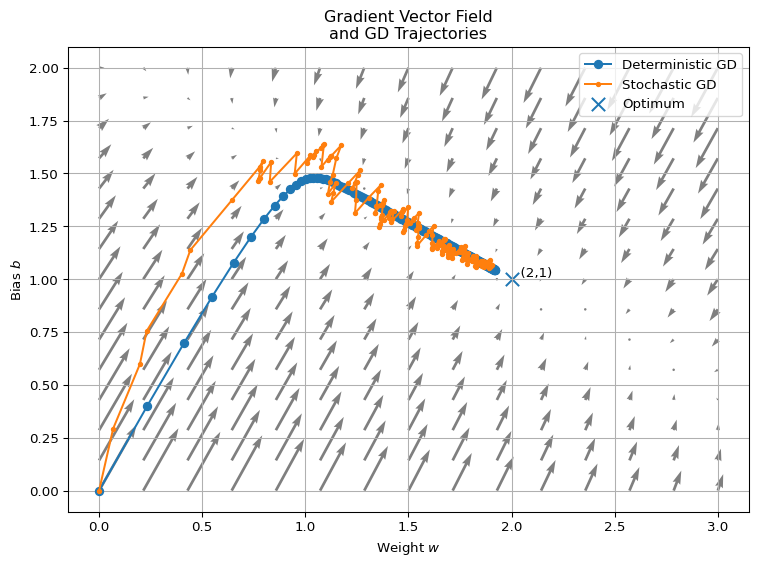
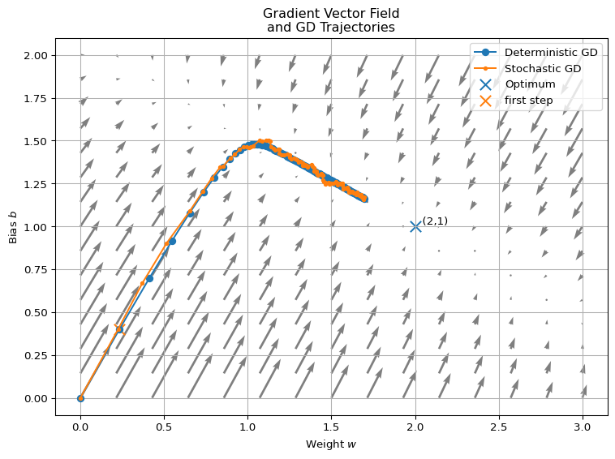
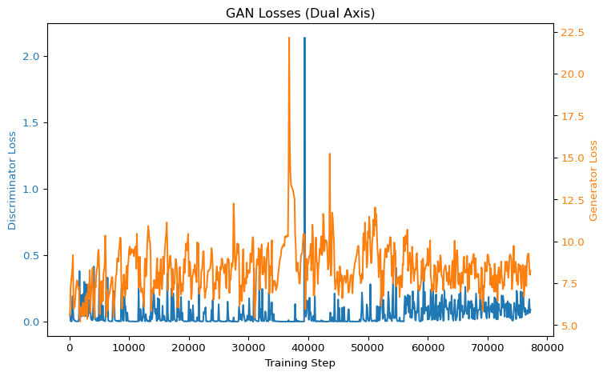

# === importing pyTorch ===
import torch3 Deep Learning with PyTorch
3.1 PyTorch
PyTorch is a library for deep learning. In this chapter, we’ll introduce its most important features, and we’ll cover everything else along the way later on.
We can import it with:
3.2 Tensors
The term “tensor” can have different meanings depending on the context. In PyTorch, a tensor is essentially a multidimensional array and it’s the fundamental data structure used for all computations.
To turn a Python list into a rank-1 tensor (a vector), we do:
# === a vector in pyTorch ===
torch.tensor([1, 2, 3])tensor([1, 2, 3])Here is some key terminology for talking about tensors, based on the terminology used in TensorFlow’s introduction to tensors:
- axis: each axis corresponds to one index in the tensor.
- rank: the number of axes of a tensor.
- a scalar has rank 0, e.g.,
torch.tensor(5). - a vector has rank 1, e.g.,
torch.tensor([1, 2, 3]). - a matrix has rank 2, e.g.,
torch.tensor([[1, 2], [3, 4]]).
- a scalar has rank 0, e.g.,
- size:
- the size of an axis is the number of elements along it
- the size of a tensor is the total number of elements it contains
- shape: a tuple giving the size along each axis.
- for
torch.tensor([1, 2, 3]), it’s shape is is(3,). - for
torch.tensor([[1, 2], [3, 4]]), it’s shape is(2, 2).
- for
You will often see “dimension” used interchangeably with rank, or say “the dimension” instead of the axis. Let me briefly motivate the use of the word dimension.
It’s not the same as the “dimension” in the phrase “a 3-dimensional vector”, which refers to the number of degrees of freedom in a vector space. Here, dimension refers to the number of indices you need to access the individual elements. For example, a 2D tensor needs two indices m[i][j].
You could also think of a tensor as a grid or a discrete space, where the rank tells you how many independent directions you have to move between elements.
Here are some more ways to define tensors in pyTorch, we always use the same shape (3,2) for the tensors.
# === some elemental ways to generate tensors ===
print("\n a rank-2 tensor full of 0s")
print(torch.zeros((3, 2)))
print("\n a rank-2 tensor full of 7s")
print(torch.full((3, 2), 7))
print("\n a rank-2 tensor randomly filled with [0-9]")
print(torch.randint(0, 10, (3, 2)))
a rank-2 tensor full of 0s
tensor([[0., 0.],
[0., 0.],
[0., 0.]])
a rank-2 tensor full of 7s
tensor([[7, 7],
[7, 7],
[7, 7]])
a rank-2 tensor randomly filled with [0-9]
tensor([[1, 1],
[1, 6],
[3, 7]])To practise the terminology from above: the tuple \((3,2)\) defines the shape. So, the first axis has size 3 and the second axis has size 2. We can query it with .shape, which returns an object of type torch.Size.
# === the shape of a tensor ===
t = torch.zeros((3, 2))
print(t.shape)torch.Size([3, 2])We can combine multiple rank-d tensors into one rank-(d+1) tensor, by stacking them along a new axis
# === stacking tensors ===
# create three rank-2 tensors
tensor1 = torch.tensor([[1, 2], [3, 4]])
tensor2 = torch.tensor([[5, 6], [7, 8]])
tensor3 = torch.tensor([[9, 10], [11, 12]])
# stack the tensors along a new axis
stacked_tensor = torch.stack((tensor1, tensor2, tensor3))
stacked_tensortensor([[[ 1, 2],
[ 3, 4]],
[[ 5, 6],
[ 7, 8]],
[[ 9, 10],
[11, 12]]])To retrieve the second tensor back, we simply extract the second slice of the stacked tensor like this:
# === slicing tensors ===
stacked_tensor[1]tensor([[5, 6],
[7, 8]])To clarify how indexing works in tensors, here’s an example using a tensor of shape (2, 3, 4), where each element contains an integer representing its index written in “mathematical notation”:
# === index positions of tensors ===
# each entry in this tensor shows it's coordinate in mathematical notation
t = torch.tensor(
[
[[111, 112, 113, 114], [121, 122, 123, 124], [131, 132, 133, 134]],
[[211, 212, 213, 214], [221, 222, 223, 224], [231, 232, 233, 234]],
]
)
print(t)
print(f"The element at mathematical index (2,3,4) is: {t[1][2][3]}")tensor([[[111, 112, 113, 114],
[121, 122, 123, 124],
[131, 132, 133, 134]],
[[211, 212, 213, 214],
[221, 222, 223, 224],
[231, 232, 233, 234]]])
The element at mathematical index (2,3,4) is: 2343.3 Linear neural nets
We’ll get to know the simplest neural nets. Linear neural nets. But along the way we discuss sme stuff that is important for all neural nets.
For working with neural nets (NN) in general we need to import
import torch.nn as nnA linear neural net, has a bunch of input and output nodes and forwards each signal coming to an input node to an output node multiplied with the weight of that connection. Additionally each output node has a constant bias applied to it.
Let’s look at a little example.
# === linear nn with custom parameters ===
# create a linear layer
linear_nn = nn.Linear(3, 2)
# manually set the weights
weights = torch.FloatTensor([[1, 0, 1], [0, 1, -1]])
# manually set the bias
bias = torch.FloatTensor([2, -3])
# assign the weights and bias to the linear layer
linear_nn.weight = nn.Parameter(weights)
linear_nn.bias = nn.Parameter(bias)
Note
- we have to make sure that the tensors for a neutral net are float tensors. That’s why I used `FloatTensor’ for creating the weights adn biases
- a parameter is a tensor that is a parameter of neural net.
When we apply this network to to a vector \((x,y,z)\) it does this computation \[ \mathrm{linear\_nn}(x,y,z) = \begin{pmatrix} 1 & 0 & 1 \\ 0 & 1 & -1 \end{pmatrix} \begin{pmatrix} x \\ y \\ z \end{pmatrix} + \begin{pmatrix} 2 \\ -3 \end{pmatrix} \]
For example for the input \((1,0,0)\) we should get \((3,-3)\). We can verify this by by using forward to plug a tensor into the net:
# === applying a net to input ===
v = torch.tensor([1.0, 0.0, 0.0])
linear_nn.forward(v)tensor([ 3., -3.], grad_fn=<ViewBackward0>)
Note
instead of writing torch.FloatTensor, we just can just use dedicated floats in the array by adding a decimal point.
We get the right tensor back, but also a bit extra information grad_fn=<ViewBackward0>. This reference to a gradient node, but we for that we have to talk about gradients first. And before we do even that, let’s see why we need gradients in the first place. But don’t worry in Section 3.5.1 we discuss the mystery of the viewBackward.
3.4 Stochastic gradient descent
At its core, training a neural network means finding model parameters θ (weights and biases) that minimize a loss function \[ L(\theta) = \frac{1}{N} \sum_{i=1}^N \ell(f(x_i;\theta), y_i), \]
where \(\ell\) measures prediction error on sample \((x_i, y_i)\), \(L\) is the (mean) loss on the whole batch of samples.
For basic gradient descent we try to minimize the loss by walking the parameters against the gradient \[ \theta \gets \theta - \eta \nabla_{\theta}L(\theta) \]
Where \(f\) is represented as a neural net and \(\theta\) are it’s parameters.
Let’s look at a very simple example. Let’s pick a linear neural net of size \((1,1)\), i.e., one input and one output. For this net the parameters are \(\theta = (w,b)\) where \(w\) is the single weight and \(b\) the single bias of the net. For input \(x\) the net produces \(f(x) = xw + b\), a linear function. Our sample batches are just of size \(1\) so we get one input \(x\) and one desired output \(y\). As a loss function we use squarred error which is just \(L(f(x;\theta), y) = (f(x;\theta) - y)^2\).
For the sample \((x,y) = (3,5)\) we want to see which way the gradient points for parameters \(\theta = (0,0)\): \[ L((w,b)) = (3w + b - 5)^2 = 9w^2 + 6w(b-5) + (b-5)^2 \] So the gradient is \[ \nabla_\theta L((w,b)) = \begin{pmatrix} 18w + 6b - 30 \\ 6w + 2b - 10 \end{pmatrix} \]
And thus for \((w,b) = (0,0)\) the gradient \[ \nabla_\theta L((0,0)) = \begin{pmatrix} - 30 \\ - 10 \end{pmatrix} \]
Using pyTorch we get the same result (and that feels kind of magical):
# === one stochastic GD step ===
import torch.nn as nn
import torch
# linear net representing f(x) = 0.0 x + 0.0
model_net = nn.Linear(1, 1)
model_net.weight = nn.Parameter(torch.tensor([[0.0]]))
model_net.bias = nn.Parameter(torch.tensor([0.0]))
x = torch.tensor([3.0])
y = torch.tensor([5.0])
f_x = model_net.forward(x)
L = (f_x - y).pow(2)
# this says: computes ∇L
L.backward()
# this is how we access the components of ∇L
print(f"grad(w): {model_net.weight.grad}")
print(f"grad(b): {model_net.bias.grad}")grad(w): tensor([[-30.]])
grad(b): tensor([-10.])
Note
- the code has some stuff about tensor shapes that can trip you up when you’re new
- the weight parameter is a tensor of shape (inputs, outputs)=(1,1), as a list this is
[[w]] - the same is true for the shapes of the gradients
- neutral nets like their arguments to be batched. So in our example even though the basic input shape for the nn is (1) it really would like tho have a batch of (1), i.e., a shape (b,1). Our batch has only size 1, so we want to just add an extra dimension at the beginning, which is done by
.unsqueeeze(0)(new 0 dimension please)
Note the nice terminology. .forward pushes a tensor x through our net. Abd with .backward we update our net according to how well it’s result was for x.
We can use this to create a proper little stochastic gradient descent. We will extend the setup from above. We have our model function \(f(x;\theta_0)\) with \(\theta_0 = (0,0)\). We want to approximate a target function \(f(x;\theta_*)\) with \(\theta_* = (2,1)\). Of course we should imagine here that we don’t know our the parameters of the target function. We will do stochastic gradient descent by sampling \(x\) uniformly from \([0,1)\) (this region is chosen arbitrarily) and do our updates according to \[ \theta_{t+1} \gets \theta_t - \eta \nabla_{\theta}L(f(x_t;\theta_t),y_t), \] where \(L(a,b) = (a - b)^2\) and \(y_t = f(x_t, \theta_*)\).
# === stochastic GD ===
torch.manual_seed(7)
STEP_SIZE = 0.1 # η
STEPS = 200
# target function with (w,b) = (2,1)
target_function = nn.Linear(1, 1)
target_function.weight = nn.Parameter(torch.tensor([[2.0]]))
target_function.bias = nn.Parameter(torch.tensor([1.0]))
# model function initialized with (w,b) = (0,0)
model_net = nn.Linear(1, 1)
model_net.weight = nn.Parameter(torch.tensor([[0.0]]))
model_net.bias = nn.Parameter(torch.tensor([0.0]))
def step(x, y):
# compute the loss gradient
o = model_net.forward(x)
loss = (o - y).pow(2)
loss.backward()
# step the parameters according to gradient
model_net.weight = nn.Parameter(
model_net.weight - STEP_SIZE * model_net.weight.grad
)
model_net.bias = nn.Parameter(model_net.bias - STEP_SIZE * model_net.bias.grad)
# do steps and record each θ = (w,b)
torch_path = []
for _ in range(STEPS):
torch_path.append(
(model_net.weight.data[0].item(), model_net.bias.data.data[0].item())
)
x = torch.rand((1, 1))
y = target_function.forward(x)
step(x, y)
print(f"the final θ = {torch_path[-1]}")the final θ = (1.9013594388961792, 1.0614407062530518)This actually worked. And it this recipe of
- get samples (or a batch)
- compute loss
- step the parameters
also work for much more complicated nets and other loss functions. Of course, there should be a theory behind the concrete loss function and how to step the parameters.
Actually I want to go a little bit into this for our example. It might still be kind of very abstract and not really palpable why it does work actually. Especially when you look at the first couple of results it’s not clear they are at all going the right way.
torch_path[0:5][(0.0, 0.0),
(0.0682234913110733, 0.2931046187877655),
(0.19812387228012085, 0.5987083911895752),
(0.23019880056381226, 0.7535954117774963),
(0.4016020596027374, 1.0257779359817505)]Let’s see what stochastic gradient descent does in average. That is what is the expected gradient. What we do basically, in each step take a sample of the expected loss \[ \begin{split} F(w,b) &= \mathbb{E}_{X\sim U(0,1)}\big[(wX + b - (2X +1))^2\big] \\ &= \int_0^1 ((w-2)x + (b-1))^2 \mathrm{d}x\\ &= \frac{(w-2)^2}{3} + (w-2)(b-1) + (b-1)^2 \end{split} \] and the gradient \[ \nabla F(w,b) = \begin{pmatrix} \frac{2}{3}(w-2) + (b-1)\\ (w-2) + 2(b-1) \end{pmatrix} \]
This is called deterministic GD as the expectation removes any stochasticity (and of course we can’t use it in pracitce becaues we can’t calculate this expectadion.)
We can write the formula for deterministic GD with step size \(\eta\), as \[ \begin{pmatrix} w_{t+1}\\ b_{t+1} \end{pmatrix} = \begin{pmatrix} w_{t}\\ b_{t} \end{pmatrix} - \eta \begin{pmatrix} \frac{2}{3} & 1 \\ 1 & 2 \end{pmatrix} \left( \begin{pmatrix} w_{t}\\ b_{t} \end{pmatrix} - \begin{pmatrix} 2\\ 1 \end{pmatrix} \right) \]
So there is some theory behind this that this converges when when \(\eta A\) is a contraction and \(I - A\) invertible, but let us rather plot the vector field given by the update rule \(-A (\theta - \theta^*)\) and see how the deterministic GD and the stochastic GD we have computed earlier fare
Code
import numpy as np
import matplotlib.pyplot as plt
# ── Settings ───────────────────────────────────
w_star, b_star = 2.0, 1.0
A = np.array([[2 / 3, 1.0], [1.0, 2.0]]) # Hessian of expected MSE
lr = 0.1
num_steps = 200
# ── Build grid for vector field ───────────────
w_vals = np.linspace(0, 3, 15)
b_vals = np.linspace(0, 2, 15)
W, B = np.meshgrid(w_vals, b_vals)
U = np.zeros_like(W)
V = np.zeros_like(B)
# Compute field: (U,V) = - ∇F = -A·(θ−θ*)
for i in range(W.shape[0]):
for j in range(W.shape[1]):
theta = np.array([W[i, j], B[i, j]])
grad = A.dot(theta - np.array([w_star, b_star]))
U[i, j] = -grad[0]
V[i, j] = -grad[1]
# ── Deterministic GD trajectory ──────────────
det_path = [(0.0, 0.0)]
for _ in range(num_steps):
w, b = det_path[-1]
grad = A.dot(np.array([w, b]) - np.array([w_star, b_star]))
det_path.append((w - lr * grad[0], b - lr * grad[1]))
w_det, b_det = zip(*det_path)
# from pyTorch
w_torch, b_torch = zip(*torch_path)
# ── Plot vector field + paths ────────────────
plt.figure(figsize=(8, 6))
plt.quiver(W, B, U, V, angles="xy", scale_units="xy", alpha=0.5)
plt.plot(w_det, b_det, "o-", label="Deterministic GD")
plt.plot(w_torch, b_torch, ".-", label="Stochastic GD")
plt.scatter([w_star], [b_star], marker="x", s=100, label="Optimum")
plt.text(w_star, b_star, " (2,1)", va="bottom")
plt.xlabel("Weight $w$")
plt.ylabel("Bias $b$")
plt.title("Gradient Vector Field\nand GD Trajectories")
plt.legend()
plt.grid(True)
plt.tight_layout()
plt.show()
It’s also so interesting to see that the even though the stochastic GD bumbles along the 2D-plane and the end it’s not much worse that deterministic GD.
3.4.1 Batches
Actually nets want batches of data. Until now pyTorch just applied some behind the scenes magic so that we didn’t notice.
So in our model_net we gave it one vector of size 1, i.e., a 1-Dimensional tensor. The basic function actually expects a batch a tensor of shape (b,1) where \(b\) is the lengtht of the batch and it returns all the results as a shape (b,1) tensor again. Just to make it general. If we have a nn that is can process tensors of shape s_in and produces tensors of shape s_out we actually should feed the network tensors of shape (b,s_in) and the forward result is a tensor of shape (b,s_out). And now let’s go back again to what happens when we have only one tensor. Then behind the scenes pyTorch takes our shape (1) tensor and transforms it into a shape (1,1) tensor (so [x] became [[x]], which looks pointless without context). For that we can use unsqueeze
t = torch.tensor([1, 2])
t.unsqueeze(0)tensor([[1, 2]])It basically wraps an extra dimension around the dimension that we have specified (here it was the most outer one).
It basically introduces another dimension of size 1. Actually squeeze does get rid of (pointless) dimensions of size 1
t = torch.randn(2, 1, 2, 1)
print(f"before squeeze: {t.shape}")
t = t.squeeze()
print(f"after squeeze: {t.shape}")before squeeze: torch.Size([2, 1, 2, 1])
after squeeze: torch.Size([2, 2])But batches are great they can reduce the bumbleness of our updates and pyTorch can compute them also much faster internally then feeding the tensors 1 by 1 in python loops.
Let’s look at the linear layer example from above again and introduce some batches.
# === Simple example with linear layers ===
torch.manual_seed(0)
BATCH_SIZE = 20
STEP_SIZE = 0.1
STEPS = 100
# target function with (w,b) = (2,1)
target_function = nn.Linear(1, 1)
target_function.weight = nn.Parameter(torch.tensor([[2.0]]))
target_function.bias = nn.Parameter(torch.tensor([1.0]))
# model function initialized with (w,b) = (0,0)
model_net = nn.Linear(1, 1)
model_net.weight = nn.Parameter(torch.tensor([[0.0]]))
model_net.bias = nn.Parameter(torch.tensor([0.0]))
# this is one step
def step(x_batch, y_batch):
loss = (model_net.forward(x_batch) - y_batch).pow(2).mean()
loss.backward()
model_net.weight = nn.Parameter(
model_net.weight - STEP_SIZE * model_net.weight.grad
)
model_net.bias = nn.Parameter(model_net.bias - STEP_SIZE * model_net.bias.grad)
# do steps and record each θ = (w,b)
torch_path = []
for _ in range(STEPS):
torch_path.append(
(model_net.weight.data[0].item(), model_net.bias.data.data[0].item())
)
x_batch = torch.rand((BATCH_SIZE, 1))
y_batch = target_function.forward(x_batch)
step(x_batch, y_batch)
print(f"the final θ = {torch_path[-1]}")
print((7 / 30, 0.4))the final θ = (1.693508267402649, 1.1575511693954468)
(0.23333333333333334, 0.4)Code
import numpy as np
import matplotlib.pyplot as plt
# ── Settings ───────────────────────────────────
w_star, b_star = 2.0, 1.0
A = np.array([[2 / 3, 1.0], [1.0, 2.0]]) # Hessian of expected MSE
lr = 0.1
num_steps = 100
# ── Build grid for vector field ───────────────
w_vals = np.linspace(0, 3, 15)
b_vals = np.linspace(0, 2, 15)
W, B = np.meshgrid(w_vals, b_vals)
U = np.zeros_like(W)
V = np.zeros_like(B)
# Compute field: (U,V) = - ∇F = -A·(θ−θ*)
for i in range(W.shape[0]):
for j in range(W.shape[1]):
theta = np.array([W[i, j], B[i, j]])
grad = A.dot(theta - np.array([w_star, b_star]))
U[i, j] = -grad[0]
V[i, j] = -grad[1]
# ── Deterministic GD trajectory ──────────────
det_path = [(0.0, 0.0)]
for _ in range(num_steps):
w, b = det_path[-1]
grad = A.dot(np.array([w, b]) - np.array([w_star, b_star]))
det_path.append((w - lr * grad[0], b - lr * grad[1]))
w_det, b_det = zip(*det_path)
# from pyTorch
w_torch, b_torch = zip(*torch_path)
# ── Plot vector field + paths ────────────────
plt.figure(figsize=(8, 6))
plt.quiver(W, B, U, V, angles="xy", scale_units="xy", alpha=0.5)
plt.plot(w_det, b_det, "o-", label="Deterministic GD")
plt.plot(w_torch, b_torch, ".-", label="Stochastic GD")
plt.scatter([w_star], [b_star], marker="x", s=100, label="Optimum")
plt.scatter([7 / 30], [0.4], marker="x", s=100, label="first step")
plt.text(w_star, b_star, " (2,1)", va="bottom")
plt.xlabel("Weight $w$")
plt.ylabel("Bias $b$")
plt.title("Gradient Vector Field\nand GD Trajectories")
plt.legend()
plt.grid(True)
plt.tight_layout()
plt.show()
Now we can see that the batched stochastic GD follows the determinsitce GD much more closely.
3.5 Gradients
Now we look at calculating gradients a more detailed.
Let’s take something super simple \(f(x,y) = x + 2y\) and use pyTorch to compute it’s gradient. For that we need the tensors to be float tensors, otherwise we get something like RuntimeError: Only Tensors of floating point and complex dtype can require gradients which means a tensor must be a float tensor so we can compute gradients (which is quite sensible, it’s hard to compute gradients for integers). We also have to add requires_grad=True because for manually created tensors this is false by default.
import numpy as np
x = torch.tensor([1.0], requires_grad=True)
y = torch.tensor([2.0], requires_grad=True)
result = x + 2 * y
result.backward()
print(f"gradient for x: {x.grad}")
print(f"gradient for y: {y.grad}")gradient for x: tensor([1.])
gradient for y: tensor([2.])When we print plus now we see a function reference that pyTorch uses to determine these gradients.
resulttensor([5.], grad_fn=<AddBackward0>)We get a reference to the function AddBackward, because this function ‘knows’ how to handle the backward pass of computing the gradients for an addition (because result came from an addition).
Just for fun we can check other operations
print(x * y)
print(x / y)
print(max(x, y))
print(x < y)
print(x.unsqueeze(0))tensor([2.], grad_fn=<MulBackward0>)
tensor([0.5000], grad_fn=<DivBackward0>)
tensor([2.], requires_grad=True)
tensor([True])
tensor([[1.]], grad_fn=<UnsqueezeBackward0>)3.5.1 The mysterious of the viewBackward0
Because we didn’t input a batch of tensors internally it created a batch (but just as a view) like this:
print(x.view(-1, x.size(-1)))tensor([[1.]], grad_fn=<ViewBackward0>)And that’s where the view came from
3.6 NN building blocks
We can connect layers with Sequential.
# === combining networks ===
input_layer = nn.Linear(4, 125)
hidden_layer = nn.Linear(125, 125)
output_layer = nn.Linear(125, 2)
sequential_nn = nn.Sequential(input_layer, hidden_layer, output_layer)
tensor = torch.tensor([1.0, 2.0, 3.0, 4.0]).unsqueeze(0)
# Applying sequential_nn produces the same as...
print(f"sequential_nn: {sequential_nn(tensor)}")
# ... applying the individual layers in order
print(f"concatenated: {output_layer(hidden_layer(input_layer(tensor)))}")sequential_nn: tensor([[-0.4515, 0.2871]], grad_fn=<AddmmBackward0>)
concatenated: tensor([[-0.4515, 0.2871]], grad_fn=<AddmmBackward0>)
Note
- I haven’t used the forward function for the input but just applied the layer to the input directly. This does just use the forward function
- And yes, we have to make manually that our layers do fit together othewise we might get something like this: RuntimeError: mat1 and mat2 shapes cannot be multiplied (1x126 and 125x2)
- there are, of course, packages that take this work away from you, but we’re learning here. So we don’t use them
We combined 3 linear layers, which actually doesn’t make much sense as this is basically multiplying three matrices together and this is just a single matrix again. And similarly we could have just done with a single layer from 4 inputs to 2 outputs.
But we can add other layers in between. For example a Rectified Linear Unit (ReLU) which is very easy \[ \mathrm{ReLU}(x) = \max(0,x) \] and when we add as a layer it just ‘rectifies’ each input and forwards it (and it doesn’t need any size specification).
In this example we can see that the third component gets clipped.
# === ReLU clips input ===
layer = nn.ReLU()
layer(torch.tensor([1, 0, -1]).unsqueeze(0))tensor([[1, 0, 0]])So and if we are for example using a net like this, it can’t be simplified (or at least nobody knows how and if):
# === combining linear with relu ===
nn.Sequential(
nn.Linear(6, 125), nn.ReLU(), nn.Linear(125, 125), nn.ReLU(), nn.Linear(125, 2)
)Sequential(
(0): Linear(in_features=6, out_features=125, bias=True)
(1): ReLU()
(2): Linear(in_features=125, out_features=125, bias=True)
(3): ReLU()
(4): Linear(in_features=125, out_features=2, bias=True)
)We will actually use this (or very similar) net to solve the cartpole environment.
3.7 Example - GAN on Atari images
This example from the book is quite big and I think as a beginner it’s ok not to bother to understand it. However, it’s fun to run it out of the box (when it works and it didn’t for me at the beginning and that was quite demotivating). It’s also nice to identify the things that we have already seen in a proper example and also teaser some things that are still to come.
The running file is under chapter-03/03_atari_gan.py. It looks a bit daunting at first but nearly half of it is “just” declaration of the neural networks. Of course there is quite some stuff to learn here as well, but for the beginning I would say “there are two sufficently complicated nets” is enough.
3.8 Discriminator vs Generator Loss
Code
import pandas as pd
import matplotlib.pyplot as plt
# adjust these paths to wherever you saved your CSVs
disc_csv = "quarto/data/atari_gan_dis_loss.csv"
gen_csv = "quarto/data/atari_gan_gen_loss.csv"
# TensorBoard CSVs typically have columns: wall_time, step, value
df_disc = pd.read_csv(disc_csv)
df_gen = pd.read_csv(gen_csv)
# Create plot
fig, ax1 = plt.subplots(figsize=(8, 5))
# Left y-axis: Discriminator loss
ax1.plot(
df_disc["Step"], df_disc["Value"], color="tab:blue", label="Discriminator Loss"
)
ax1.set_xlabel("Training Step")
ax1.set_ylabel("Discriminator Loss", color="tab:blue")
ax1.tick_params(axis="y", labelcolor="tab:blue")
# Right y-axis: Generator loss
ax2 = ax1.twinx()
ax2.plot(df_gen["Step"], df_gen["Value"], color="tab:orange", label="Generator Loss")
ax2.set_ylabel("Generator Loss", color="tab:orange")
ax2.tick_params(axis="y", labelcolor="tab:orange")
# Title and layout
plt.title("GAN Losses (Dual Axis)")
fig.tight_layout()
plt.show()